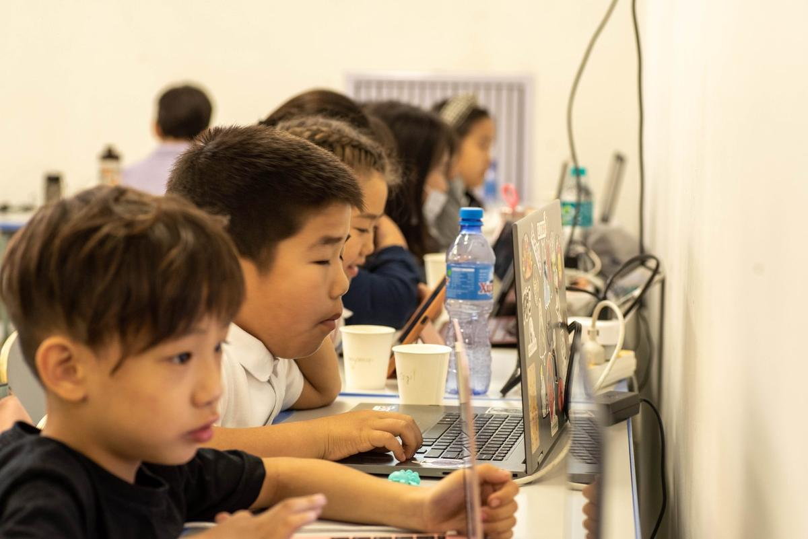

Блок кодчлолоос бодит текстэн програмчлал руу шилжих анхны замнал. Урьдчилсан кодчлолын мэдлэг шаардахгүй.
Сурагчид блок суурьтай Python-оос эхлээд хоёр үе шатаар текст кодчлол руу аажмаар шилжинэ. Ингэснээр анх код сурч буй хүүхэд бичиглэлийн (syntax) алдаанд түгжрэлгүйгээр алгоритмын суурь ойлголтоо эзэмшинэ.
for i in range(4): move_forward(100) turn_right(90)
Python Basics with blocks — блокоор Python-ийн ойлголтуудтай танилцана.
Python Basics болон CS: Exploring Programming with Python агуулгаар текст кодчлолд бүрэн шилжинэ.
Үгүй. Тооцоолох сэтгэлгээ бол 21-р зууны суурь чадвар бөгөөд эмч, биологичоос хууль зүйч хүртэл бүх мэргэжилд хэрэгтэй. Хүүхэд өөрийн санаагаа технологиор дижитал бүтээл болгон хийж сурах нь анхаарал төвлөрөл, төлөвлөлт, багийн ажиллагааг хөгжүүлнэ.
Код нь юуны өмнө сэтгэн бодохыг заадаг. Steve Jobs-ийн хэлснээр "Everyone should learn to program a computer because it teaches you how to think." Хиймэл оюуныг ашиглах, шалгах, залах хүнд ч алгоритмын суурь ойлголт хэрэгтэй хэвээр байна.
Тооцоолох сэтгэлгээ гэдэг нь компьютерын ухааны зарчим, аргад тулгуурлан асуудлыг үр дүнтэй шийдэх чадвар юм (Wing, 2006). Блок кодчлол нь хүүхдэд энэ чадварыг хамгийн эрт, хамгийн ойлгомжтой хэлбэрээр зааж эхлэх арга.
Асуудлын нөхцөл, хүрэх зорилгыг тодорхойлж, шинжилнэ.
Асуудлыг жижиг хэсгүүдэд хуваан, хүндрэлийг бууруулна.
Шийдлийн алхмуудын дараалал буюу төлөвлөгөө гаргана.
Шийдэл зорилгодоо хүрч байгааг шалгаж, алдааг засна.
Эдгээр алхмыг компьютер гүйцэтгэж болох ч заавал компьютер шаардахгүй. Тиймээс тооцоолох сэтгэлгээ өдөр тутмын асуудал шийдвэрлэх чадвар болон хэрэглэгдэнэ.
Төлөвлөх, импульсээ хянах чадвар нь сургуулийн амжилт болон зан үйлийн өөрийгөө зохицуулалтын суурь. Эдгээр чадвар 5–7 насанд хамгийн хурдан хөгждөг тул эрт эхлэх нь утга учиртай.
Судалгаагаар блок суурьтай визуал програмчлал нь сургуулийн өмнөх болон бага ангийн хүүхдэд хамгийн үр дүнтэй хэлбэрийн нэг гэж үзэгддэг. Европ, Канад, АНУ-д бага ангиас эхлэн тооцоолох сэтгэлгээг кодчлолоор заахыг зөвлөдөг.
Эх сурвалж: Arfé, Vardanega & Ronconi (2020), Computers & Education дахь судалгааны тойм.
Хуваарь, төлбөрийн талаар дэлгэрэнгүй мэдээлэл авахыг хүсвэл бидэнтэй холбогдоорой.
Бүртгүүлэх →Python Basics-ийг дүүргэсэн сурагчид Carnegie Mellon-ийн CS0, дараа нь CS1 хөтөлбөр рүү шилжинэ.